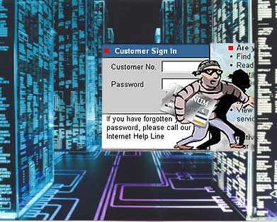

Identificación y Atentificación
-
Es el primer filtro o defensa de los sistemas, ya que evita el ingreso de usuarios no autorizados, es la base y punto de referencia para la mayor parte de controles de acceso y seguimiento de acciones de usuarios Identificación hace referencia en el momento que un usuario se da a conocer en el sistema; y Autenticación a la verificación que realiza el sistema sobre esta identificación. Para realizar la autenticación de la identidad del usuario se pueden utilizar las siguientes de maneras individuales o combinadas. Clave de acceso o password, número de identificación personal o PIN etc. Tarjeta magnética que puede ser asignada Caracterización de un usuario que lo identifica plenamente (huellas digitales o voz) Patrones de escritura únicos e indubitables Cada técnica en cuanto a seguridad tiene sus ventajas y desventajas, algunas desventajas puede ser olvidar claves y extraviar tarjetas de los dispositivos, por otra parte los controles de autenticación biométricos serían los más apropiados y fáciles de administrar, aunque los mismos serían los más costosos de implementar por lo complejo, seguro y fácil utilización.
